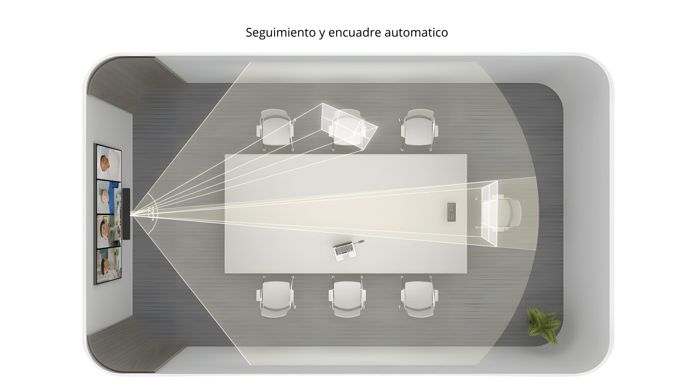

1. ¿Quiénes Somos?
Somos un engranaje perfecto entre personas, talento técnico, marcas globales y compromiso de servicio en todo el territorio colombiano. Diseñamos, integramos y desplegamos soluciones tecnológicas avanzadas.
Dataservicios se esfuerza por ofrecer un espacio de trabajo eficiente y sencillo para todos, proporcionando una gama completa de dispositivos —incluidos auriculares, altavoces, cámaras, barras de videoconferencia y pantallas interactivas— que se pueden utilizar en oficinas abiertas, en casa, salas privadas y en movimiento, permitiendo que todo tipo de profesionales trabajen como aman.
Pasión y Excelencia
Amamos lo que hacemos. Generar valor sostenible a nuestros clientes y ofrecer una integración AV/TI perfecta es nuestro mayor propósito corporativo.
Respaldo Comprobado
Cientos de clientes y entidades corporativas certifican nuestro compromiso, oportunidad y alta calidad técnica a lo largo de más de 10 años de experiencia en el mercado.
Cobertura Nacional
Llegamos con soporte presencial y despliegue técnico especializado a cualquier ciudad o municipio del territorio nacional colombiano.
Nuestro Equipo
Contamos con talento ágil, responsable, certificado y honesto para brindar un acompañamiento integral de principio a fin en cada proyecto.
2. Nuestra Propuesta de Valor
Crea el mejor espacio de trabajo a tu gusto con la oferta tecnológica integral de Dataservicios. Nos enfocamos en eliminar la complejidad técnica para entregar proyectos llave en mano con máxima rentabilidad y usabilidad.
- Arquitectura Punta a Punta: Cobertura de todas las dimensiones digitales de su empresa, asegurando ecosistemas de alta productividad sin fisuras entre hardware y software.
- Experiencias de Video Intuitivas: Facilitamos una comunicación cómoda entre empleados, clientes y socios en diversos escenarios, desarrollando relaciones confiables a través de video y audio cristalino.
- Integración AV/TI Transparente: Convergencia ágil entre los sistemas audiovisuales tradicionales y la infraestructura de red corporativa.
- Garantías Directas y Acompañamiento: Respaldo directo con fabricantes líderes globales y modelos de soporte continuo 5x8 y 24x7.
3. Especializaciones Técnicas
Ofrecemos arquitectura punta a punta para cubrir todas las necesidades tecnológicas de los espacios de trabajo modernos:

Diseño e Ingeniería AV
Planificación de espacios, cálculo de acústica, ángulos de visión, diagramas de flujo de señal y especificaciones de componentes técnicos a la medida.
Despliegue e Instalación Física
Instalación estructurada, canalizaciones ocultas, montaje en soportes móviles o murales de alta resistencia y peinado profesional de cableado.
Configuración Lógica & IA
Puesta en marcha de software de videoconferencia, enrutamiento Dante, calibración de DSP de audio y parametrización de algoritmos de inteligencia artificial (Auto-Framing, Speaker Tracking, Video Fence).
Capacitación y Adopción
Entrenamiento técnico al equipo de TI y jornadas de adopción a usuarios finales para maximizar el retorno de la inversión desde el primer día.
4. Áreas de Soluciones Audiovisuales
Ofrecemos un portafolio diversificado y especializado para transformar cualquier ambiente en una sala colaborativa de alto desempeño:

Videocolaboración (BYOM & MTR)
Barras inteligentes con IA, cámaras PTZ con seguimiento óptico del orador (Speaker Tracking), arreglos de micrófonos en techo/mesa y barras nativas para Teams Rooms o Zoom Rooms.
- Auto-Framing & Video Fence
- Conexión Plug & Play de un solo cable
Pantallas Interactivas (EDLA)
Displays interactivos de gran formato (65", 75", 86", 98") con certificación Google EDLA, Android 16 nativo, módulos OPS Windows 11 Pro, pizarra digital y multitoque de 64 puntos.
- Integración Google Workspace nativa
- Transmisión táctil bidireccional
Automatización & Control
Control centralizado de iluminación, persianas, pantallas motorizadas, conmutación de señales HDMI/IP y botoneras touch de control de un solo toque para iniciar reuniones.
- Sistemas Crestron / Kramer / Automate
- Escenarios de reunión preprogramados
Sonido Profesional & Acústica
Procesadores DSP de audio, altavoces de techo Dante, cancelación de ruido activa por IA (Noise Proof), arreglos de superficie inalámbricos inductivos y ecualización de sala.
- Claridad de voz en 360°
- Eliminación de eco acústico (AEC)
Colaboración Inalámbrica (Cast)
Botones físicos de transmisión USB/HDMI (Cast Buttons) que permiten compartir pantalla sin instalar software, aislados de la red corporativa y con soporte quad-split.
- Cero instalación de drivers
- Encriptación AES-128 / WPA3
Servicios Profesionales de TI
Instalación física estructurada, canalizaciones ocultas, montaje en soportes móviles/murales, configuración de software, pruebas de campo y capacitaciones a usuarios.
- Garantías directo con fabricante
- Soporte técnico 5x8 / 24x7

5. Soluciones por Plataforma de Videoconferencia
Integramos hardware certificado que se adapta de forma nativa a la plataforma estándar de su organización:

Soluciones Microsoft
Microsoft Teams Rooms (MTR) & Teams Meetings: Experiencia nativa con consolas táctiles de un solo toque para unirse (One-Touch Join), integración con calendario Outlook/Teams y administración remota desde el Teams Admin Center.
Soluciones Zoom
Zoom Rooms & Zoom Meetings: Salas de conferencias nativas con compartimiento inalámbrico instantáneo, soporte de doble pantalla, controles táctiles intuitivos y máxima fidelidad de video en la nube.
Soluciones BYOM (Bring Your Own Meeting)
Flexibilidad total que permite a los usuarios conectar su propio portátil mediante un único cable USB-C o botón Cast y tomar el control del video 4K y audio de la sala para cualquier plataforma (Google Meet, Webex, Cisco, etc.).
6. Soluciones por Industria
Desarrollamos soluciones personalizadas que responden a los desafíos particulares de cada sector económico:
Educación
Aulas híbridas, pantallas interactivas EDLA de gran formato con pizarra digital, grabación y transmisión de clases, e interacción remota entre estudiantes y docentes.
Finanzas y Banca
Salas de juntas de alta seguridad, transmisión inalámbrica encriptada (AES-128 / WPA3), sistemas de directorio con alta disponibilidad y confidencialidad de datos.
Cuidado de la Salud (Healthcare)
Telemedicina, aulas de discusión de casos médicos en alta definición, cámaras de precisión y soluciones integradas para ambientes hospitalarios y clínicos.
Fabricación e Industria
Comunicación en tiempo real entre plantas de producción y oficinas administrativas, monitoreo en salas de control y equipos de alta durabilidad operacional.
7. Soluciones por Escenarios y Tamaño de Sala
Desde pequeños espacios de enfoque hasta grandes auditorios corporativos, Dataservicios dimensiona y equipa el lugar adecuado para la forma en que se reúnen sus equipos:
| Escenario / Sala | Capacidad | Tipo de Solución | Componentes Principales |
|---|---|---|---|
| Espacios de Enfoque (Huddle Rooms) | 1 - 4 personas | Multifunción / USB | Barras compactas All-in-One con IA, pantallas de 55" a 65", micrófonos integrados. |
| Salas Medianas | 5 - 10 personas | Multifunción / MTR / BYOM | Barras de video 4K con auto-framing, pantallas interactivas 75"-86", botones Cast. |
| Salas de Conferencias / Juntas | 11 - 20 personas | Modular de Alto Rendimiento | Cámaras PTZ con tracking óptico, arreglos de micrófonos inductivos de mesa/techo, DSP. |
| Auditorios y Directorio | > 20 personas | Diseño Personalizado / AV-over-IP | Matrices de control centralizado, audio Dante, videowalls / pantallas 98", microfonía múltiple. |
Soluciones Multifunción
Barras de vídeo para salas pequeñas, medianas y grandes. Todo lo que necesitas para una videollamada perfecta con software integrado en un chasis elegante.
Soluciones Modulares
Sistemas adaptables que separan la cámara, los altavoces y los micrófonos para cubrir espacios de geometrías complejas o mesas extensas.
Soluciones USB
Dispositivos universales de fácil conexión Plug & Play para convertir cualquier monitor tradicional en una estación de colaboración activa.
8. Marcas Aliadas Globales
Trabajamos de la mano con los fabricantes líderes de la industria tecnológica a nivel mundial para garantizar innovación constante, homologación de productos y garantías directas de fábrica:
9. Tecnología de Videocolaboración de Alto Rendimiento
Cada reunión que falla es tiempo desperdiciado. Instalamos los espacios donde los equipos trabajan bien y los clientes quedan impresionados: salas inteligentes, performance de alto rendimiento y cartelería digital — diseñados, implementados y soportados.
Barras Inteligentes y Sistemas de Audio con IA
Ofrece tu mejor imagen y el sonido más claro en cualquier espacio de reunión. Desde salas pequeñas hasta grandes salas de conferencias, nuestras soluciones ayudan a que todos vean y escuchen con total claridad.
- Óptica con IA Avanzada: Cámaras de ultra alta resolución (hasta 50MP) con doble lente, seguimiento del orador (Speaker Tracking), encuadre de grupo (Auto Framing) y galerías de rostros inteligentes (IntelliFocus).
- Cancelación de Ruido Inteligente: Tecnología Noise Proof que aísla ruidos de fondo (aires acondicionados, clicks, teclados) y garantiza inteligibilidad de voz en 360°.
- Micrófonos Inalámbricos Inductivos: Cobertura extendida mediante kits de micrófonos inalámbricos (como Yealink VCM36-W) con estaciones de carga inductiva para mesas limpias.
- Compatibilidad Multiplataforma: Nativas para Teams Rooms y Zoom Rooms con modo de conmutación BYOD instantáneo.
Explora la estructura técnica de una solución de videocolaboración inteligente:


10. Pantallas Interactivas EDLA y Colaboración Inalámbrica
Pantallas Interactivas de Gran Formato (65" a 98")
Potencia la ideación y el trabajo colaborativo con displays interactivos que combinan pizarra digital de baja latencia y acceso directo al ecosistema empresarial.
- Certificación Google EDLA & Android 16: Integración nativa con Google Workspace (Docs, Sheets, Slides, Drive) con la máxima seguridad cibernética corporativa.
- Multitoque de 64 Puntos y Palm Rejection: Reconocimiento ultra-sensible en 4 niveles (lápiz fino, grueso, dedo y palma) para escritura natural.
- USB-C Dual con Carga de 65W: Transmisión de audio, video, red y toque bidireccional mediante un solo cable mientras se alimenta la laptop.
- Transmisión Inalámbrica Cast (Split-Screen): Comparte pantalla desde portátiles o móviles mediante botones físicos HDMI/USB o software, permitiendo hasta 4 dispositivos en pantalla dividida simultánea.
¿Cómo simplifica las reuniones el Cast Button?
El expositor conecta el botón Cast en el puerto de su ordenador portátil. Sin instalar controladores ni solicitar permisos de administrador de red, presiona el botón físico y transmite instantáneamente video 4K y audio con cifrado AES-128 / WPA3 al display principal de la sala.


10. Audio y Servicios Integrados
En la era moderna del trabajo híbrido, una mala calidad de audio puede arruinar incluso la mejor configuración de videoconferencia. Ya sea en una pequeña sala de reuniones o en una gran sala de juntas, escuchar y ser escuchado con claridad es fundamental para una comunicación eficaz. En esta guía, exploraremos las mejores soluciones de audio para salas de conferencias de todos los tamaños y cómo la tecnología de nivel profesional de Yealink ofrece experiencias de sonido consistentes y de alta calidad en todos los espacios de reuniones.
Por qué el audio importa más que nunca
Si bien las videoconferencias reciben mucha atención, el audio es lo que realmente impulsa la comunicación. Un volumen inconsistente, el ruido de fondo o la pérdida de sonido pueden causar frustración y problemas de comunicación. Por eso, elegir el equipo de audio adecuado para salas de conferencias es crucial.
Requisitos clave para el audio en salas modernas:
- Cobertura completa de la sala en cualquier dirección.
- Cancelación de eco y supresión de ruido inteligente.
- Escalabilidad de micrófonos según el tamaño de la sala.
- Fácil integración con plataformas como Microsoft Teams y Zoom.
- Diseño de hardware estético, limpio y discreto en la mesa o techo.
Funciones de audio inteligentes para reuniones fluidas
Los dispositivos de audio profesionales vienen con capacidades impulsadas por IA para mejorar su experiencia:
- Matrices de micrófonos con formación de haces: Se centran en los oradores activos mientras suprimen el ruido ambiental.
- Audio dúplex completo: Admite conversaciones naturales e ininterrumpidas sin cortes de audio.
- Cancelación de ruido AI: Filtra el ruido del teclado, del sistema de climatización y otros ruidos de fondo.
- Diseño de cobertura de salas: Los micrófonos y altavoces de techo crean un campo sonoro invisible pero potente.

11. Servicios Profesionales de TI
Nuestro compromiso no termina con el suministro de los dispositivos. Brindamos un ciclo de vida completo de servicios profesionales de TI para garantizar la continuidad operativa de su empresa:
Instalación Física Estructurada
Montajes murales y en soportes móviles de alta resistencia, canalizaciones estéticas ocultas, organización interna de gabinetes y certificación de puntos de red.
Configuración y Pruebas de Campo
Actualización de firmware de fábrica, vinculación con cuentas de correo corporativas de sala, pruebas rigurosas de audio y video antes de la entrega final.
Capacitación y Documentación
Jornadas de transferencia de conocimiento para el equipo de sistemas/TI y manuales de usuario simplificados para la operación diaria de la sala.
Soporte Técnico Especializado
Esquemas de soporte presencial y remoto en modalidades 5x8 y 24x7 con tiempos de respuesta SLA optimizados para incidencias críticas.
12. Cobertura Nacional y Respaldo Comprobado
Dataservicios cuenta con capacidad logística e ingenieril para desplegar y mantener proyectos tecnológicos en las principales capitales y municipios de Colombia:
Despliegue Nacional
Presencia con cuadrillas de ingenieros y técnicos certificados para atender proyectos en Bogotá, Medellín, Cali, Barranquilla, Bucaramanga, Eje Cafetero y municipios del territorio colombiano.
Garantías Directas de Fábrica
Gestionamos de manera transparente y directa las garantías con los fabricantes (hasta 36 meses en displays, 24 meses en barras y audio, 12 meses en accesorios).
Continuidad del Servicio
Planes de mantenimiento preventivo y correctivo con disponibilidad de repuestos originales y stock local de respaldo.
Respaldo y Cumplimiento Normativo
Todos nuestros procedimientos de instalación y configuración cumplen estrictamente con los estándares internacionales AVIXA, normas de cableado estructurado ANSI/TIA y las políticas de seguridad de la información corporativa de nuestros clientes.
13. Arquitectura Tecnológica del Sistema Colaborativo
Representación del flujo unificado de señales e integración tecnológica desplegado por Dataservicios:
⬇ (Cast Buttons Inalámbricos / USB-C Unificado)
Procesador Central & Displays Interactivos (Google EDLA / MTR / Zoom)
⬇ (Conexión Digital Encriptada & Audio Dante / DSP)
Sistemas de Captura de Video 4K con IA + Arreglos Acústicos con Cancelación de Ruido
⬇
Ecosistema de Colaboración Inteligente en Toda Colombia
14. Catálogo de Soluciones
Aquí podrás consultar y descargar nuestro portafolio de soluciones integradas y especificaciones técnicas detalladas en formato PDF. (A medida que vayamos agregando documentos, aparecerán en este espacio para su fácil acceso).
Catálogo General Corporativo
Próximamente disponible para descarga
Fichas Técnicas Equipos
Próximamente disponible para descarga